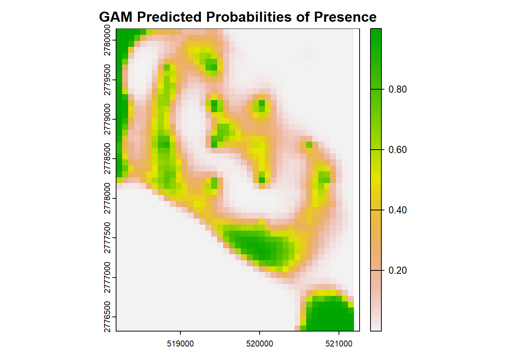
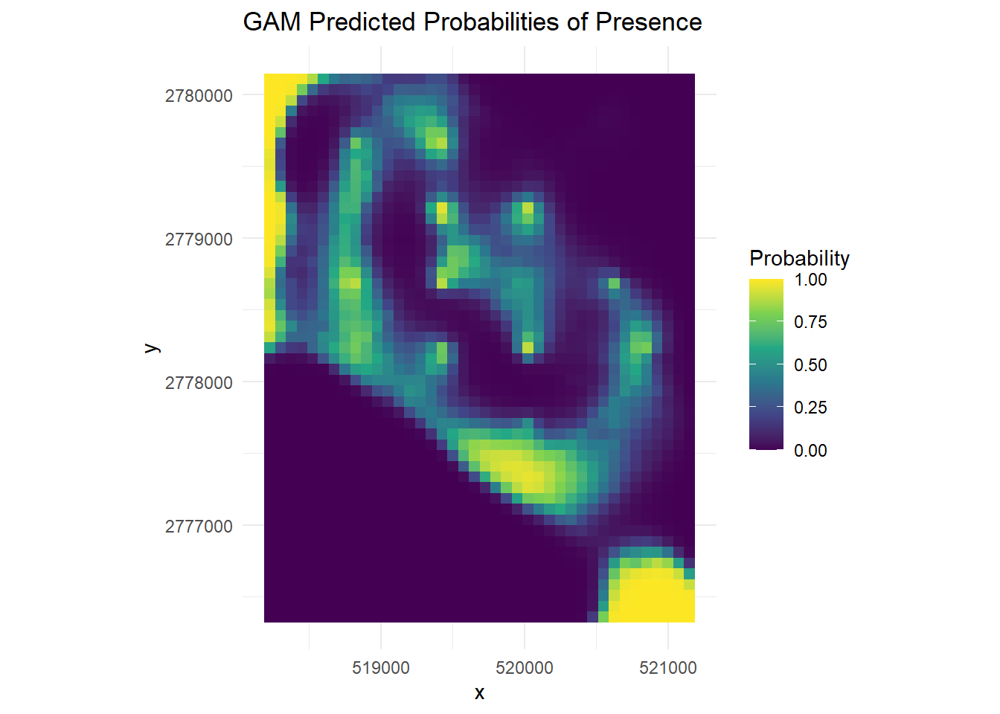

library(glmmTMB) # for fitting GLMMs
library(cowplot) # for plotting multiple panels together via plot_grid function
library(ggeffects) # for extracting the marginal effects of each covariate in the model
library(MuMIn) # for AIC
library(performance) # for R2
library(terra) #raster
library(tidyverse)
library(raster)
library(sf)
library(data.table)
library(mgcv)
# Ensure the dataset has the proper format with predictors and the response variable (RealDets)
datextract <- readRDS('data/datextract.RDS')
alldat <- readRDS('data/alldat.RDS')
# As before, assemble our dataset remove NAs
datgam <- cbind(datextract, alldat) %>% drop_na() %>% mutate(RealDets = as.factor(RealDets), Transmitter = as.factor(Transmitter))RSF with GAMs
RSFs with GAMs
This vignette uses GAMs to calculate Resource Selection Functions. This section uses the same setup as the first tab, so we will just start with brining in that data
Run GAM model
We will just use all of the data to run the GAM model in this example. GAMS do well with spatial and temporal autocorrelation!
# Fit a GAM model with spatial and temporal autocorrelation (x, y, and Date). Stay tuned for
gam_model <- gam(RealDets ~ s(hw2020, k = 4) + s(tt2020, k = 4) + s(cov2020, k = 4) + s(sdcov2020, k = 4) + s(num2020, k = 4) +
s(Transmitter, bs = "re") + # ID
s(x, y, bs = "gp"), # Spatial component
family = binomial, data = datgam, method = "REML")Summarizing the model
# Summarize the model
summary(gam_model)
##
## Family: binomial
## Link function: logit
##
## Formula:
## RealDets ~ s(hw2020, k = 4) + s(tt2020, k = 4) + s(cov2020, k = 4) +
## s(Transmitter, bs = "re") + s(x, y, bs = "gp")
##
## Parametric coefficients:
## Estimate Std. Error z value Pr(>|z|)
## (Intercept) -3.4897 0.5552 -6.286 3.26e-10 ***
## ---
## Signif. codes: 0 '***' 0.001 '**' 0.01 '*' 0.05 '.' 0.1 ' ' 1
##
## Approximate significance of smooth terms:
## edf Ref.df Chi.sq p-value
## s(hw2020) 2.939 2.997 42.41 < 2e-16 ***
## s(tt2020) 2.753 2.951 10.52 0.0226 *
## s(cov2020) 2.981 2.999 510.66 < 2e-16 ***
## s(Transmitter) 7.498 10.000 28.60 5.01e-05 ***
## s(x,y) 31.585 31.934 811.59 < 2e-16 ***
## ---
## Signif. codes: 0 '***' 0.001 '**' 0.01 '*' 0.05 '.' 0.1 ' ' 1
##
## R-sq.(adj) = 0.636 Deviance explained = 57.7%
## -REML = 1343.1 Scale est. = 1 n = 3948
# Visualize smooth effects for each covariate
plot(gam_model, pages = 1, all.terms = TRUE)
# Predict probabilities for the full dataset and evaluate accuracy. Let's skip the test vs. training - it's similar to GLMMs.
datgam$predicted_probs_gam <- predict(gam_model, newdata = datgam, type = "response")
datgam$predicted_class_gam <- ifelse(datgam$predicted_probs_gam > 0.5, 1, 0)Model accuracy
Let’s look at the model accuracy. You will see it is a lot lower than the RF model but better than the GLMM
# Confusion matrix and accuracy for the GAM
conf_matrix_gam <- table(datgam$RealDets, datgam$predicted_class_gam)
conf_matrix_gam
##
## 0 1
## 0 1779 247
## 1 244 1678
accuracy_gam <- sum(diag(conf_matrix_gam)) / sum(conf_matrix_gam)
accuracy_gam
## [1] 0.8756332Model Interpretation
Let’s map the predicted surface! Everything else is very similar to RF, GLMM
# Predict probabilities on spatial grid using GAMs
cov_2020 <- rast('data/cov2020.tif') #percent SAV cover
sdcov_2020 <- rast('data/sdcov2020.tif') #standard deviation of cover
numsp_2020 <- rast('data/num2020.tif') #number of SAV species
hw_2020 <- rast('data/hw2020.tif') #Halodule wrightii cover
tt_2020 <- rast('data/tt2020.tif')
extent <- st_read('data/trainr2021_mask.shp')
## Reading layer `trainr2021_mask' from data source
## `C:\Users\jonro\OneDrive\Desktop\RSF_OTN_Workshop\RSF_OTN_Workshop\data\trainr2021_mask.shp'
## using driver `ESRI Shapefile'
## Simple feature collection with 1 feature and 1 field
## Geometry type: POLYGON
## Dimension: XY
## Bounding box: xmin: 518189.1 ymin: 2776305 xmax: 521241.5 ymax: 2780157
## Projected CRS: NAD83 / UTM zone 17N
cov2020 <- terra::crop(cov_2020, extent)
sdcov2020 <- terra::crop(sdcov_2020, extent)
num2020 <- terra::crop(numsp_2020, extent)
hw2020 <- terra::crop(hw_2020, extent)
tt2020 <- terra::crop(tt_2020, extent)
rastdat <- c(cov2020, sdcov2020, num2020, hw2020, tt2020)
rastdat <- terra::project(rastdat, 'epsg:2958')
# Convert rasters into a data frame and predict onto spatial data
newdata_gam <- raster::as.data.frame(rastdat, xy=T) %>%
mutate(Transmitter = "place-holder")# Use rastdat from earlier
newdata_gam$predicted_probs_gam <- predict(gam_model, newdata = newdata_gam, type = "response")
## Warning in predict.gam(gam_model, newdata = newdata_gam, type = "response"):
## factor levels place-holder not in original fit
# Create a raster from predicted probabilities
pred_raster_gam <- rast(ext(rastdat), resolution = res(rastdat), crs = crs(rastdat))
pred_raster_gam[] <- newdata_gam$predicted_probs_gam
# Plot the spatial predictions
plot(pred_raster_gam, main = "GAM Predicted Probabilities of Presence")
# Convert rasters to data frames
df_gam <- as.data.frame(pred_raster_gam, xy = TRUE)
colnames(df_gam)[3] <- "GAM_Prob"
# Create the GAM plot
(gam_plot <- ggplot(df_gam, aes(x = x, y = y, fill = GAM_Prob)) +
geom_tile() +
scale_fill_viridis_c(limits = c(0, 1), name = "Probability") +
coord_equal() +
labs(title = "GAM Predicted Probabilities of Presence") +
theme_minimal())
Congrats, you have used GAMs and now have gone through the entire workshop!